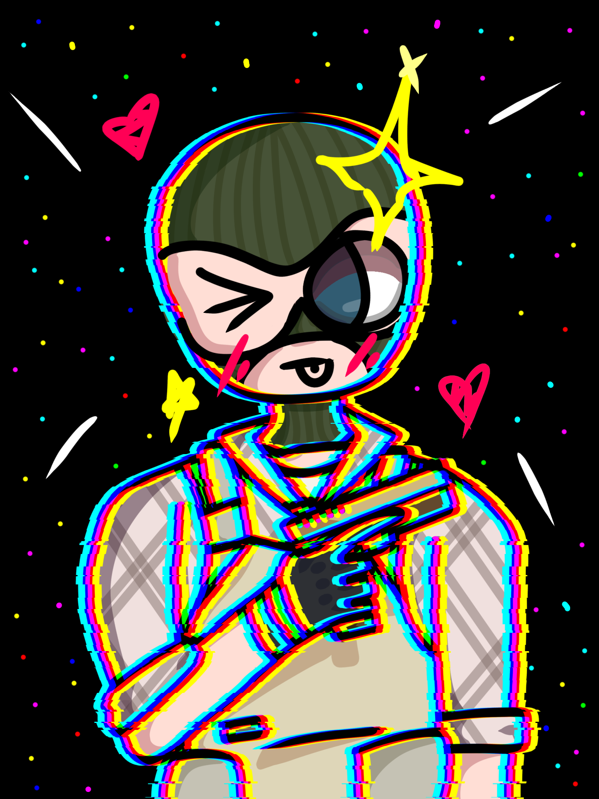

Artworks
Two Kats

I really wanted to draw the two of us(kattree and Katari) having a friendly chat. I also was in the mood to draw a background so I chose the only one I'm good at: caves!!
Completed: February 6, 2025. Time taken: about 12 hours. Drawn in ibis Paint X
Katari Kityama

I made a new furry friend. The first mandatory thing one must do when meeting a furry as an artist is to draw thier fursona! This is his own species called kyvera!
Completed: January 26, 2025. Time taken: 1 hour. Drawn in ibis Paint X
Yabloki

I watched this Russian short film where one of my favourite muscial artists played the main actor, and I really enjoyed it(at least as much as I could understand with my limited Russian knowledge)!! I drew the cute little scene where Andrei tries to ask his crush our with some apples.
Completed: December 5, 2024. Time taken: 9 hours. Drawn in ibis Paint X
Zenith

I was looking through my friend's artworks and I found this little gem right here. After expressing his beauty to her, she gave me some reference sheets and I drew him! He's her Romainian OC.
Completed: December 4, 2024. Time taken: 1.5 hours. Drawn in ibis Paint X
Dzhark
I was making opposite characters and this was one of the few that I liked. This is his original design; his clothes have changed since then because the og one looked too weird imo. His hair will also change because I was told that it was unnatural.
Completed: October 27, 2024. Time taken: about 2 hours. Drawn in ibis Paint X
Typical Russian Artist

This was created based off a prompt a random Russian on steam gave me. It read "Yes, I’m Russian, this style came about when I was riding a bear, I had vodka in one hand and a drawing tablet in the other. :p2chell:" Here is the link to that if you are curious. https://steamcommunity.com/sharedfiles/filedetails/?id=3283373103
Completed: August 23, 2024. Drawn in Photoshop
Precious Cargo
The whole backstory of Skylar is that he's saving people from various war-torn planets. This is an example of one. He is saving kattree in this one, and yes he is very worried(he kind of finds her cute so that isn't helping his nerves.)
Completed: June 19, 2024. Time taken: 2:47. Drawn in ibis Paint X
Skylar
After watching this video a couple of times. I determined that it would be cool to have my own masked character. Skylar is basically an improved version of this guy
Completed: June 18, 2024. Time taken: 0:35. Drawn in ibis Paint X
Nicked Dream
According to myself, this is based off of a dream and a song? I don't know what song? I remember the dream but not the song blehhh. I did make a timelapse of it though!! Ignore the fact I open discord :sob:
Completed: June 6, 2024. Time taken: about 4-6 hours. Drawn in Photoshop
Kawaii Terrorist
I had taken an interest in the design of the terrorist characters in the game Counter-Strike 2. I decided to draw him in a cutesy fashion because it is an interesting contrast to his job. I had also thought of him as cute at the time as well (Don't worry, I do NOT find his actions cute though)
Completed: May 28, 2024. Time taken: 1:52. Drawn in ibis Paint X
Springy Mirage
This is Mirage from Apex Legends. He at this time was my favourite legend to play, so I really wanted to draw him. I asked my friend what I should draw of him doing, and she told me to draw him in a dress. I'm not sure how easy it would be to win the Apex Games in a dress but he's slaying.
Completed: March 29, 2024. Time taken: 1:54. Drawn in ibis Paint X
Poker the Boys!
"because the creatures have always been apart of the boys?" I made this whenever I had barely played lethal company for 10 hours. I included only the creatures and loot I had come across(which was very small in comparison to what the game had to offer). This was way too much fun to make, and I really really like how it turned out.